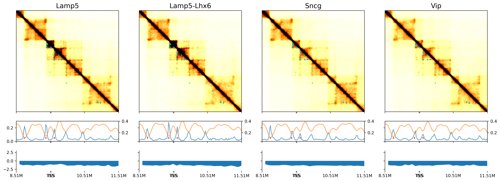

Plot examples#
import os
import cooler
import numpy as np
import pandas as pd
from scipy.stats import norm, zscore
import matplotlib as mpl
import matplotlib.pyplot as plt
from matplotlib.patches import Polygon
from matplotlib import cm as cm
import seaborn as sns
from matplotlib.colors import LogNorm
from itertools import cycle, islice
import xarray as xr
from glob import glob
mpl.style.use('default')
mpl.rcParams['pdf.fonttype'] = 42
mpl.rcParams['ps.fonttype'] = 42
mpl.rcParams['font.family'] = 'sans-serif'
mpl.rcParams['font.sans-serif'] = 'Helvetica'
leg = ['L23_IT', 'L4_IT', 'L5_IT', 'L6_IT', 'L6_IT_Car3', 'L56_NP', 'L6_CT', 'L6b', 'L5_ET', 'Amy',
'Lamp5', 'Lamp5_LHX6', 'Sncg', 'Vip', 'Pvalb', 'Pvalb_ChC', 'Sst', 'CHD7',
'MSN_D1', 'MSN_D2', 'Foxp2', 'SubCtx',
'ASC', 'ODC', 'OPC', 'MGC', 'PC', 'EC', 'VLMC'
]
legname = ['L2/3-IT', 'L4-IT', 'L5-IT', 'L6-IT', 'L6-IT-Car3', 'L5/6-NP', 'L6-CT', 'L6b', 'L5-ET', 'Amy-Exc',
'Lamp5', 'Lamp5-Lhx6', 'Sncg', 'Vip', 'Pvalb', 'Pvalb-ChC', 'Sst', 'Chd7',
'MSN-D1', 'MSN-D2', 'Foxp2', 'SubCtx-Cplx',
'ASC', 'ODC', 'OPC', 'MGC', 'PC', 'EC', 'VLMC'
]
leg2name = {xx:yy for xx,yy in zip(leg, legname)}
leg = {'exc': ['L23_IT', 'L4_IT', 'L5_IT', 'L6_IT', 'L6_IT_Car3', 'L56_NP', 'L6_CT', 'L6b', 'Amy'],
'inh': ['Lamp5', 'Lamp5_LHX6', 'Sncg', 'Vip', 'Pvalb', 'Pvalb_ChC', 'Sst', 'CHD7'],
'msn': ['MSN_D1', 'MSN_D2', 'Foxp2'],
'sub': ['SubCtx'],
'glia': ['ASC', 'ODC', 'OPC'],
'mgc': ['MGC'],
'smc': ['PC'],
'endo': ['EC'],
'fibro': ['VLMC'],
}
leg['neu'] = leg['exc'] + leg['inh'] + leg['msn'] + leg['sub']
leg['all'] = leg['neu'] + leg['glia'] + leg['mgc'] + leg['smc'] + leg['endo'] + leg['fibro']
leg['cge'] = ['Lamp5', 'Lamp5_LHX6', 'Sncg', 'Vip']
group_name = 'cge'
leg = pd.Index(leg[group_name])
legname = leg.map(leg2name)
res = 25000
indir = '/data/hba/domain_majortype/'
ddir = f'/home/jzhou_salk_edu/sky_workdir/hba/domain_majortype/diff/{group_name}/'
ldir = f'/home/jzhou_salk_edu/sky_workdir/hba/loop_majortype/diff/{group_name}/'
cdir = f'/home/jzhou_salk_edu/sky_workdir/hba/compartment_majortype/diff/{group_name}/'
chrom_size_path = '/home/jzhou_salk_edu/sky_workdir/hba/ref/hg38.main.chrom.sizes'
chrom_sizes = cooler.read_chromsizes(chrom_size_path, all_names=True)
chrom_sizes = chrom_sizes.iloc[:-3]
## Load boundary probability
bound_count_ct = pd.read_hdf(f'{indir}MajorType_boundcount.hdf', key='data').loc[leg]
cell_count_ct = pd.read_csv(f'{indir}MajorType_cellcount.csv.gz', index_col=0, header=0, squeeze=True).loc[leg]
bound_prob_ct = bound_count_ct / cell_count_ct[:,None]
bound_prob_ct
| chr1_0 | chr1_1 | chr1_2 | chr1_3 | chr1_4 | chr1_5 | chr1_6 | chr1_7 | chr1_8 | chr1_9 | ... | chr22_2023 | chr22_2024 | chr22_2025 | chr22_2026 | chr22_2027 | chr22_2028 | chr22_2029 | chr22_2030 | chr22_2031 | chr22_2032 | |
|---|---|---|---|---|---|---|---|---|---|---|---|---|---|---|---|---|---|---|---|---|---|
| Lamp5 | 1.0 | 0.0 | 0.0 | 0.0 | 0.0 | 0.0 | 0.0 | 0.0 | 0.0 | 0.0 | ... | 0.076000 | 0.074000 | 0.084667 | 0.092667 | 0.083333 | 0.062667 | 0.039333 | 0.024000 | 0.033333 | 1.0 |
| Lamp5_LHX6 | 1.0 | 0.0 | 0.0 | 0.0 | 0.0 | 0.0 | 0.0 | 0.0 | 0.0 | 0.0 | ... | 0.075472 | 0.059119 | 0.069182 | 0.077987 | 0.091824 | 0.076730 | 0.031447 | 0.018868 | 0.038994 | 1.0 |
| Sncg | 1.0 | 0.0 | 0.0 | 0.0 | 0.0 | 0.0 | 0.0 | 0.0 | 0.0 | 0.0 | ... | 0.071231 | 0.053942 | 0.085062 | 0.080221 | 0.081604 | 0.060166 | 0.034578 | 0.028354 | 0.032503 | 1.0 |
| Vip | 1.0 | 0.0 | 0.0 | 0.0 | 0.0 | 0.0 | 0.0 | 0.0 | 0.0 | 0.0 | ... | 0.102000 | 0.061333 | 0.064000 | 0.055333 | 0.063333 | 0.052000 | 0.036667 | 0.022000 | 0.035333 | 1.0 |
4 rows × 115009 columns
## Load insulation score
ins_count = xr.open_dataset(f'{indir}MajorType_impute.insulation.nc')
ins_count = ins_count.sel({'bin': (ins_count['bin_chrom']!='chrX')})
ins_count['ratio'] = (ins_count.sel({'type':'inter'})['__xarray_dataarray_variable__'] / ins_count.sel({'type':'intra'}))['__xarray_dataarray_variable__']
ins = ins_count['ratio'].to_pandas().loc[leg]
genemeta = pd.read_csv('/home/jzhou_salk_edu/sky_workdir/hba/ref/gencode.v33.bed', sep='\t', header=None, index_col=4)
genemeta = genemeta[~genemeta.index.duplicated(keep='first')]
gtmp = 'LAMP5'
lslop, rslop = 1000000, 2000000
chrom = genemeta.loc[gtmp, 0]
if genemeta.loc[gtmp, 5]=='+':
tss = genemeta.loc[gtmp, 1]
tes = genemeta.loc[gtmp, 2]
else:
tss = genemeta.loc[gtmp, 2]
tes = genemeta.loc[gtmp, 1]
ll, rr = (tss - lslop), (tss + rslop)
print(chrom, ll, rr, genemeta.loc[gtmp, 5])
chr20 8514358 11514358 +
## contact maps are plotted at loop resolution
## select region to plot in Q matrix
resl = 10000
loopl, loopr = (ll//resl), (rr//resl)
print(loopl, loopr)
851 1151
indir = '/home/jzhou_salk_edu/sky_workdir/hba/loop_majortype/'
## Load cell type Q
from scipy import ndimage as nd
dstall = []
for ct in leg:
cool = cooler.Cooler(f'{indir}{ct}/{ct}/{ct}.Q.cool')
Q = cool.matrix(balance=False, sparse=True).fetch(chrom).tocsr()
tmp = Q[loopl:loopr, loopl:loopr].toarray()
dstall.append(tmp)
print(ct)
Lamp5
Lamp5_LHX6
Sncg
Vip
## select differential loop
loopall = pd.read_hdf(f'{ldir}merged_loop.hdf', key='data')
sell = ((loopall[0]==chrom) &
(zscore(np.log(loopall['Qanova']))>norm.isf(0.15)) &
(zscore(np.log(loopall['Tanova']))>norm.isf(0.15)) &
(loopall[1]>ll) & (loopall[5]<rr))
## select differential boundary
binall = pd.read_hdf(f'{ddir}MajorType_boundary_stats.hdf', key='data')
selb = (binall['chrom']==chrom) & (binall['start']>=ll) & (binall['start']<rr) & binall['bklfilter'] & binall['chi2filter'] & binall['ins_lm'] & (binall['probdiff']>0.05) & binall['diff_sc']
print(selb.sum())
3
ins.columns = binall.index
## select differential compartment
resc = 100000
comp = pd.read_csv(f'{cdir}DifferentialResult/fdr_result/differential.intra_sample_combined.pcQnm.bedGraph', sep='\t', header=0, index_col=None)
comp.index = comp['chr'] + '_' + (comp['start'] // resc).astype(str)
bincomp = comp[['chr', 'start', 'end', 'sample_maha', 'pval', 'padj']]
comp = comp[leg]
selc = (bincomp['chr']==chrom) & (bincomp['start']>=ll) & (bincomp['start']<rr) & (zscore(bincomp['sample_maha'])>norm.isf(0.025))
print(selc.sum())
0
fig, axes = plt.subplots(3, len(leg), figsize=(5*len(leg), 7), sharex='col', sharey='row',
gridspec_kw={'height_ratios':[5,1,1]}, dpi=300)
## differential feature position at 10k resolution
tmpl = loopall.loc[sell, [1,4]].values // resl - loopl
tmpd = binall.loc[selb, 'start'] // resl - loopl
tmpc = bincomp.loc[selc, 'start'] // resl - loopl
for i in range(len(leg)):
ax = axes[0,i]
ax.axis('equal')
ax.set_title(legname[i], fontsize=16)
img = ax.imshow(dstall[i], cmap='afmhot_r', vmin=0, vmax=0.012, aspect='auto')
ax.set_yticks([])
ax.set_yticklabels([])
ax.set_xticklabels([])
## plot diff loop
ax.scatter(tmpl[:, 0], tmpl[:, 1], alpha=1, s=1, marker='o', edgecolors='none', color='c')
ax = axes[1,i]
## plot boundary prob, use 10k coordinate
sel = (binall['chrom']==chrom) & (binall['start']>=ll) & (binall['start']<rr)
ax.plot(binall.loc[sel, 'start'] // resl - loopl,
bound_prob_ct.loc[leg[i], sel].values,
c='C0', alpha=0.7)
## plot diff boundary
ax.scatter(tmpd, np.zeros(len(tmpd))+0.05, color='r', s=4)
ax.set_ylim([0, 0.3])
ax2 = ax.twinx()
## plot insulation score, use 10k coordinate
ax2.plot(binall.loc[sel, 'start'] // resl - loopl,
ins.loc[leg[i], sel].values,
c='C1', alpha=0.7)
ax2.set_ylim([0.05, 0.4])
ax.set_xlim([0, loopr-loopl-1])
ax.set_xticks(np.arange(0, loopr-loopl+1, 100).tolist() + [tss//resl-loopl, tes//resl-loopl])
ax.set_xticklabels([])
ax = axes[2,i]
sns.despine(bottom=True, ax=ax)
## plot compartment, use 10k coordinate
sel = (bincomp['chr']==chrom) & (bincomp['start']>=ll) & (bincomp['start']<rr)
x = bincomp.loc[sel, 'start'] // resl - loopl
y = comp.loc[sel, leg[i]].values
ax.fill_between(x, y, 0, where=y >= 0, facecolor='C3', interpolate=True)
ax.fill_between(x, y, 0, where=y <= 0, facecolor='C0', interpolate=True)
## plot diff comp
ax.scatter(tmpc, np.zeros(len(tmpc)), color='r', s=4)
ax.set_ylim([-3, 3])
ax.set_xlim([-0.5, loopr-loopl-0.5])
ax.set_xticks(np.arange(-0.5, loopr-loopl, 100).tolist() + [tss//resl-loopl-0.5, tes//resl-loopl-0.5])
ax.set_xticklabels([])
ax.set_xticklabels([f'{(xx+loopl)/100}M' for xx in np.arange(0, loopr-loopl+1, 100)]+['TSS','TES'])
# plt.savefig(f'{group_name}_diff_{gtmp}.pdf', transparent=True, dpi=300)

dstall = []
for ct in leg:
cool = cooler.Cooler(f'{indir}{ct}/{ct}/{ct}.Q.cool')
Q = cool.matrix(balance=False, sparse=True).fetch(chrom).tocsr()
tmp = Q[loopl:loopr, loopl:loopr].toarray()
dst = nd.rotate(tmp, 45, order=0, reshape=True, prefilter=False, cval=0)
dstall.append(dst)
print(ct)
Lamp5
Lamp5_LHX6
Sncg
Vip
fig, axes = plt.subplots(len(leg)*2+1, 1, figsize=(10, np.sum([1] + np.tile([3.5,1],len(leg)).tolist())/2),
gridspec_kw={'height_ratios':[1] + np.tile([3.5,1],len(leg)).tolist()}, dpi=300, sharex='all')
tmpl = loopall.loc[sell, [1,4]].values // resl - loopl
tmpd = binall.loc[selb, 'start'] // resl - loopl
tmpc = bincomp.loc[selc, 'start'] // resl - loopl
ax = axes[0]
sel = (binall['chrom']==chrom) & (binall['start']>=ll) & (binall['start']<rr)
xpos = (binall.loc[sel, 'start'] // resl - loopl) * np.sqrt(2)
ax.plot(xpos, binall.loc[sel, 'chi2_sc'].values,
c='C0', alpha=0.7)
ax.set_title('Chi-Square', fontsize=10)
ax.set_xlim([0, (loopr-loopl-1)*np.sqrt(2)])
for i in range(len(leg)):
ax = axes[i*2+1]
ax.set_title(legname[i], fontsize=10)
ax.spines['right'].set_visible(False)
ax.spines['top'].set_visible(False)
ax.spines['bottom'].set_visible(False)
ax.spines['left'].set_visible(False)
img = ax.imshow(dstall[i], cmap='afmhot_r', vmin=0, vmax=0.012)
h = len(dstall[i])
ax.set_ylim([0.5*h, 0.4*h])
ax.set_xlim([0, h])
ax.set_yticks([])
ax.set_yticklabels([])
ax.scatter((tmpl[:, 0]+tmpl[:, 1])/np.sqrt(2), 0.5*h-(tmpl[:, 1]-tmpl[:, 0])/np.sqrt(2),
alpha=0.1, s=10, marker='D', edgecolors='c', color='none')
ax = axes[i*2+2]
ax.plot(xpos, bound_prob_ct.loc[leg[i], sel].values, c='C0', alpha=0.7)
ax.scatter(tmpd * np.sqrt(2), np.zeros(len(tmpd))+0.05, color='r', s=4)
ax.set_ylim([0, 0.3])
ax2 = ax.twinx()
ax2.plot(xpos, ins.loc[leg[i], sel].values, c='C1', alpha=0.7)
ax2.set_ylim([0.05, 0.4])
ax.set_xlim([0, (loopr-loopl-1)*np.sqrt(2)])
ax.set_xticks(np.sqrt(2)*np.array(np.arange(0, loopr-loopl+1, 100).tolist() + [tss//resl-loopl, tes//resl-loopl]))
ax.set_xticklabels([])
ax.set_xticklabels([f'{(xx+loopl)/100}M' for xx in np.arange(0, loopr-loopl+1, 100)]+['TSS','TES'])
# plt.savefig(f'/gale/netapp/entex/HBA/snm3C/plot/majortype_diff_FOXP2.pdf', transparent=True, dpi=300)
[Text(0.0, 0, '8.51M'),
Text(141.4213562373095, 0, 'TSS'),
Text(282.842712474619, 0, '10.51M'),
Text(424.26406871192853, 0, '11.51M'),
Text(141.4213562373095, 0, 'TSS'),
Text(144.2497833620557, 0, 'TES')]